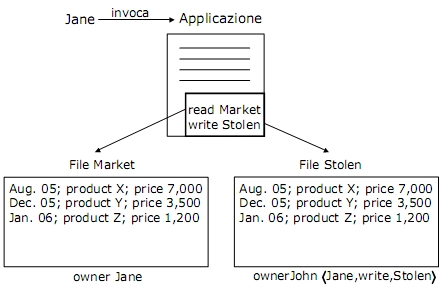

Torna alla pagina di Sicurezza & Privatezza
:: Appello d'esame di Sicurezza e Privatezza - 16/01/2006 ::
Domande
Rispondere brevemente ma in modo completo alle seguenti domande.
- Descrivere il funzionamento dei cavalli di troia.
- Descrivere il principio di separazione dei privilegi (statico e dinamico).
- Nell’ambito della tecnica di autenticazione SSO, dire cosa si intende per network identity.
- Dire in cosa consiste una bomba logica.
- Descrivere come si realizza un DoS.
- Dire cosa si intende per SQL injection, fare un esempio e illustrare in che modo è possibile difenderci da questa tipologia di attacco.
- Dire cosa si intende per trapdoor
- Descrivere il protocollo di Diffie-Hellman per lo scambio di chiavi.
SOLUZIONE
1.
Un Trojan Horse è un programma di utilità che contiene del codice nascosto che esegue funzioni non legittime. Il problema è che le politiche discrezionarie controllano solo gli accessi diretti, non effettuano nessun controllo su cosa accade all'informazione una volta rilasciata. Quindi tutto ciò che l'applicazione esegue(quindi anche il codice nascosto) dipende dall'identità dell'utente che ha invocato l'applicazione e dai suoi permessi. Un trojan horse non può operare sul sistema se non è attivato dall'utente.
Esempio:

Nell'esempio le istruzioni readMarket e writeStolen sono legittime perché ci si basa sull'identità di chi ha lanciato l'applicazione, cioè Jane. Quindi John rispettando la politica discrezionaria riesce ad ottenere informazioni non legittime.
2.
La separazione dei privilegi deriva dal principio per cui nessun utente dovrebbe essere fornito di privilegi sufficienti per poter fare cattivo uso del sistema.
Separazione Statica dei Privilegi: consiste nell'assegnare a priori le autorizzazioni in modo da non dare troppi privilegi ad un singolo utente. Ad esempio una politica tale che gli utenti appartenenti alla categoria "impiegato" non possono accedere a documenti appartenenti alla categoria "top secret".
Separazione Dinamica dei Privilegi: in principio l'utente non ha limitazioni, ma i suoi privilegi vengono ristretti man mano che compie operazioni. Quindi l'utente è libero di scegliere quali accessi fare (non tutti), il sistema gli negherà gli altri di conseguenza. Ad esempio una politica tale che in principio chiunque può leggere qualunque documento, ma nel momento in cui legge il Necronomicon non può più avere accesso a nessun file di qualsiasi altro autore.
3.
WARNING
non trattato
4.
Bomba logica: è un programma o parte di programma che viene eseguito al verificarsi di determinate condizioni. La sua esecuzione determina condizioni o stati che facilitano la realizzazione di atti non autorizzati. La bomba logica è il programma contenente la condizione che, se verificata, farà esplodere la bomba.
5.
Un attacco DoS (Denial of Service) ha come obiettivo quello di far saltare il servizio offerto da un sistema, quindi vedranno negato l'accesso al sistema(alle informazioni e ai servizi che offre) anche utenti autorizzati.
Un attacco di questo tipo viene realizzato inondando di richieste casuali la macchina obiettivo che non riuscirà più a sopportare il carico di richieste e smetterà di funzionare.
I diversi tipi di DoS sono:
- ping of death
- SYN flooding
- smurf attack
- DDoS (distributed denial of service)
In DoS è quindi l'utente malizioso a sferrare direttamente l'attacco.
6.
L'SQL injection è un attacco rivolto alle applicazioni web e coinvolge non solo SQL, ma qualsiasi linguaggio di programmazione e qualsiasi DBMS.
L'attacco consiste nell'inserimento di codice maligno nelle query SQL, sfruttando la mancanza di controlli sui dati da input dell'applicazione web.
L'input può essere trasmesso in tre modi:
- URL (query string)
- form HTML
- cookie costruito su misura
L'attacco provoca:
- manipolazione indesiderata dei dati
- accesso ad aree riservate
- visualizzazione di dati riservati
Esempio:
Abbiamo una variabile $id presa in input dalla query string, teoricamente di tipo intero, ma non validata.
$sql = "SELECT * from articoli WHERE id=$id";
se un attaccante in $id inserisce
$id = 1; DROP table articoli; la query diventerà:
$sql = "SELECT * from articoli WHERE id = 1; DROP table articoli;
che ovviamente provoca la cancellazione della tabella articoli.
Contromisure possibili sono:
- controlli sul tipo di dato: tramite l'utilizzo di alcune funzioni si forza una variabile ad appartenere ad un certo tipo.
- creazione di filtri tramite espressioni regolari: i dati in input vengono descritti da una espressione regolare. Ad esempio controllare che l'input sia formato solo dalle lettere dalla A alla Z.
- eliminazione di caratteri potenzialmente dannosi: si eliminano i caratteri che hanno un significato in un'interrogazione SQL, quindi , ; " '
- escape(\) di caratteri potenzialmente dannosi: il carattere sul quale viene effettuato il quoting (\) viene interpretato letteralmente.
7.
trapdoor: punti di accesso non documentati ad un modulo o ad un programma. Potrebbero essere delle stringhe di codice inserite nella fase di test del programma e poi dimenticate, oppure lasciate volutamente dai programmatori per poter accedere al programma dopo la sua attivazione.
Queste trapdoor sono delle vulnerabilità perché espongono il sistema a modifiche durante il funzionamento oppure possono essere usate come canali nascosti di accesso.
Un esempio di trapdoor è un controllo degli errori povero, che potrebbe causare un attacco di SQL-injection.
8.
WARNING
forse lo ha fatto Cimato, quindi vedi crittografia :p
Torna alla pagina di Sicurezza & Privatezza